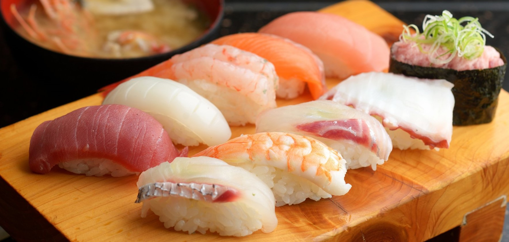

FRANCHISE
HOME
CONTAСTS
LOGIN
SIGN UP
more
from chefs from all over the world
Professional cooking of Asian cuisine with guests
Japanese dishes
more
All types of sushi consist of a basic ingredient — specifically cooked
rice, to which other ingredients are added, most often fish and nori
Structure
The history of sushi began with rice fields, where fish was fermented with
vinegar, salt and rice, after which the rice was thrown away. The earliest
form of the dish, today called naresushi, was created in Japan around the
Yayoi period (Early Neolithic–Early Iron Age). During the Muromachi period
(1336-1573), people began to eat rice as well as fish. During the Edo
period (1603-1867), vinegar rather than fermented rice began to be used.
Sushi
History of creation

more
Structure
History
Sukiyaki

The cooking process
A large nabe boiler filled with water and heated by a small gas burner is
placed in the center of the table. Kombu and or dasi can be added to the
water. When the water boils, the participants of the meal put their
favorite ingredients into the pot as they eat. Since the meat is cut very
thinly, it comes to readiness quite quickly. When the ingredients are
sufficiently cooked, the guests take the pieces, dip them in the sauce and
eat. The sauce can be different or even independently mixed "to
taste" from several ready-made sauces and spices. Then the cooking
procedure is repeated, usually there are several "bookmarks"
until all the guests feel full. The last ingredient is often noodles,
which are eaten together with the remains of the soup.
Sukiyaki – consists of several traditional ingredients for Asian cuisine:
cabbage, noodles, chrysanthemum tang ho (or spinach), broth and beef.
Usually, a "dish from a cauldron" is prepared right on the
table, having prepared a raw egg yolk for dipping juicy meat slices into
it.
In modern Japanese encyclopedias on the history of nutrition, researchers
derive the etymology of the name "sukiyaki" from the custom
common among peasants in the XVII―XVIII centuries to fry (yaku) meat on a
shovel or ploughshare (suki)
Jobs
Support
Contact
About
Contact Us
Terms of Service
Blog
Demo